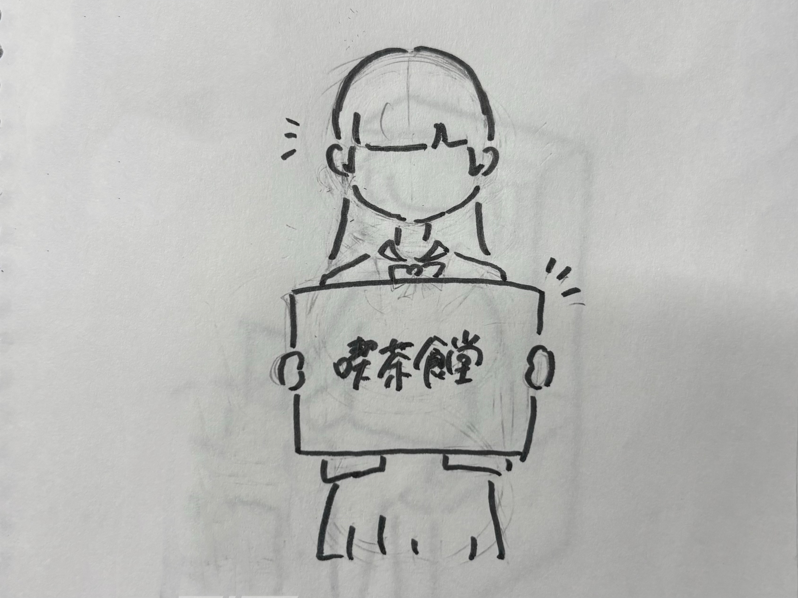
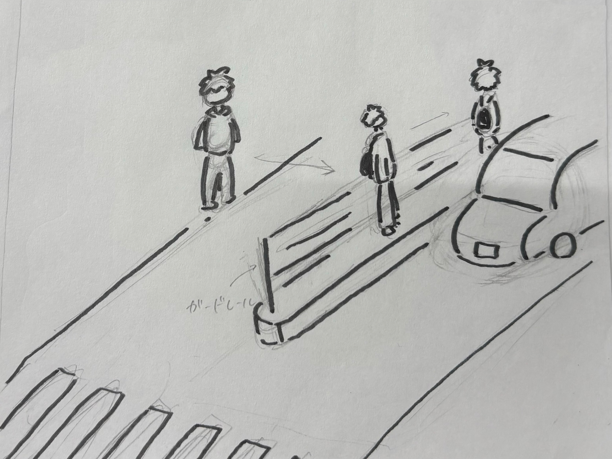
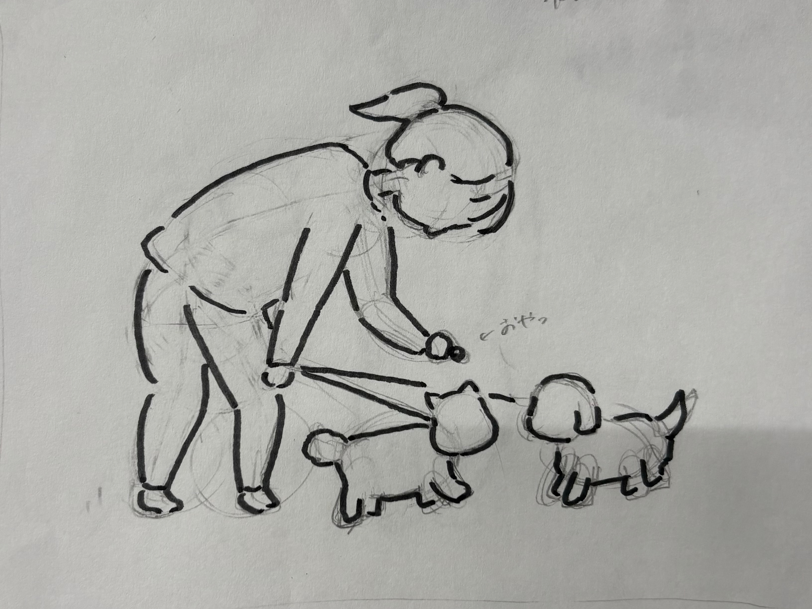

観察課題
後ろ向きに歩く女の子
 最寄り駅の近くで後ろ向きに歩いている女の子がいた。多分小学3年生くらい。
最寄り駅の近くで後ろ向きに歩いている女の子がいた。多分小学3年生くらい。誰かにぶつかりそうだと思っていたら、周りの人が気をつかって避けていたのでぶつかってはいなかった。
お母さんには注意されていた。
高校のイベントでアパレル店員みたいな呼び込みをする高校生
 週末に母校のイベントがあり、そこにいた喫茶食堂の呼び込みをする後輩がすごくうまかった。アパレル店員のような感じのトーンで呼び込みをしていた。
終点の駅に着いたのに全然降りてくれない人
 地元から帰ってくるときの新幹線で、隣の席の人が終点の駅についているのに全然降りてくれなかった。
地元から帰ってくるときの新幹線で、隣の席の人が終点の駅についているのに全然降りてくれなかった。奥の席に座っている私が降りられない。結局一番最後に降りた。
横断歩道じゃないところを渡ったら車が来ちゃった人
 横断歩道じゃないところを渡っている人がいた。道路の真ん中にガードレールがあるため、それをまたいでいたところ車が来てしまった。真ん中で車が過ぎるのを待つのかと思っていたら、道路の真ん中のガードレールの横を歩き始めたので驚いた。
歩きながら犬におやつをあげる人
 犬の散歩中に歩きながら犬におやつをあげる人がいた。立ち止まったり、座っておやつをあげるひとはよく見かけるが、歩きながらあげるひとは初めて見た。犬はめちゃくちゃ食べずらそうだった。